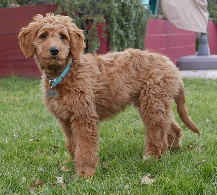

Goldendoodle
From Wikipedia, the free encyclopedia
The Goldendoodle is a designer dog created by crossbreeding a Golden Retriever and a Poodle. First widely bred in the 1990s, they are bred in three different sizes—each corresponding to the size of Poodle used as a parent.
Goldendoodles often demonstrate Golden Retrievers' intuitive and human-oriented nature in addition to the intelligent personality and "allergy-friendly" coat of a Poodle.[1]
